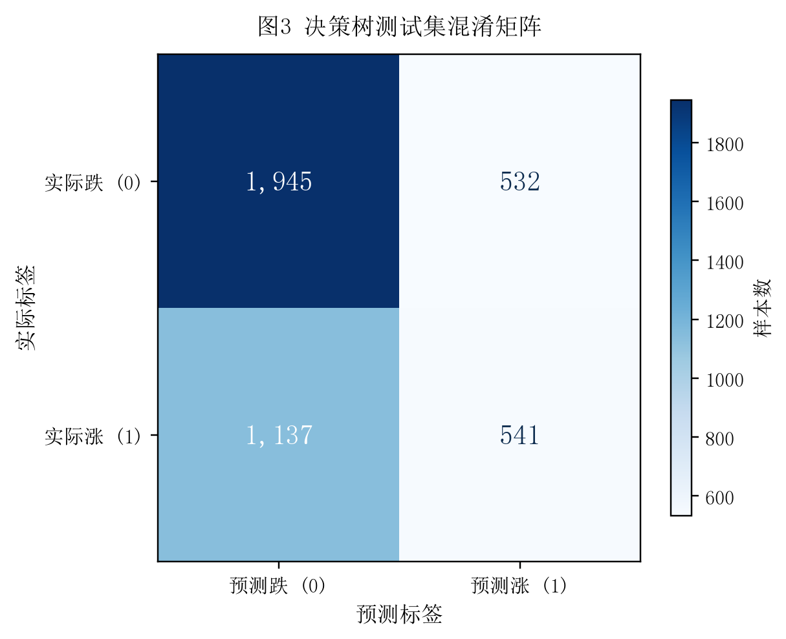
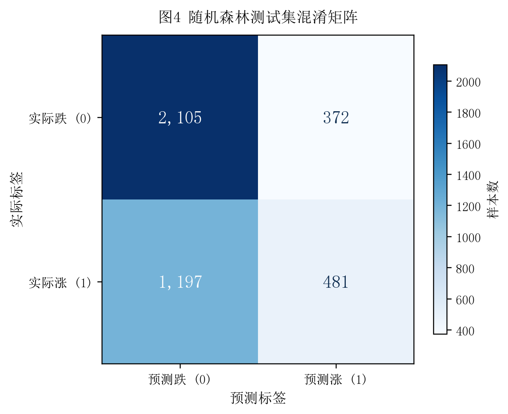

逻辑回归
线性组合套 Sigmoid 输出概率，训练快、可解释，但只能学习线性决策边界。
Classification ML · AI Trading Engine
使用 A 股财务指标收益数据集，构建决策树与随机森林分类模型，预测股票后续收益的涨跌方向，并通过混淆矩阵、AUC 与 ROC 曲线评估模型表现。
Algorithm Basics
逻辑回归给出线性概率基线，决策树提供可解释的非线性规则，随机森林通过集成多棵树提升稳健性；混淆矩阵、AUC 与 ROC 曲线共同衡量分类模型的排序能力。
线性组合套 Sigmoid 输出概率，训练快、可解释，但只能学习线性决策边界。
按基尼不纯度递归分裂特征空间，规则透明、能处理非线性，单棵树易过拟合。
自助采样 + 特征随机构造多棵树，集成投票提升泛化能力，对噪声稳健。
TP/FP/FN/TN 衡量错配类型；ROC 横轴 FPR、纵轴 TPR；AUC 为曲线下面积，越接近 1 越好。
Model Evaluation
数据集 model_data_stock.csv 共 20,772 条记录、17 个财务特征；按 8:2 随机划分训练集与测试集，random_state=42 保证可复现。下表为决策树与随机森林在测试集上的评估结果。
横轴为假阳性率 FPR，纵轴为真正例率 TPR；对角线为随机猜测基准，曲线越靠近左上角越好。
市值 MV 与盈利成长类指标排名靠前，估值类指标紧随其后。
Confusion Matrix
左图为决策树、右图为随机森林。两个模型在负类（跌）上都能保持较高的 TN，但 TP（正确预测涨）相对较少，整体倾向预测“跌”。

TP=541 / FP=532 / FN=1137 / TN=1945

TP=481 / FP=372 / FN=1197 / TN=2105
Artifacts
TASK5 独立保存报告、Python 源码、4 张图表与 2 个结果 CSV，网页继续复用共享样式与脚本。
包含算法原理、评价指标解释、代码实现、ROC 曲线、混淆矩阵、特征重要性与结果解读。
下载 PDF完整 Python 脚本可重新生成全部图表、CSV 和报告。
查看 Python 源码 下载模型对比 下载特征重要性